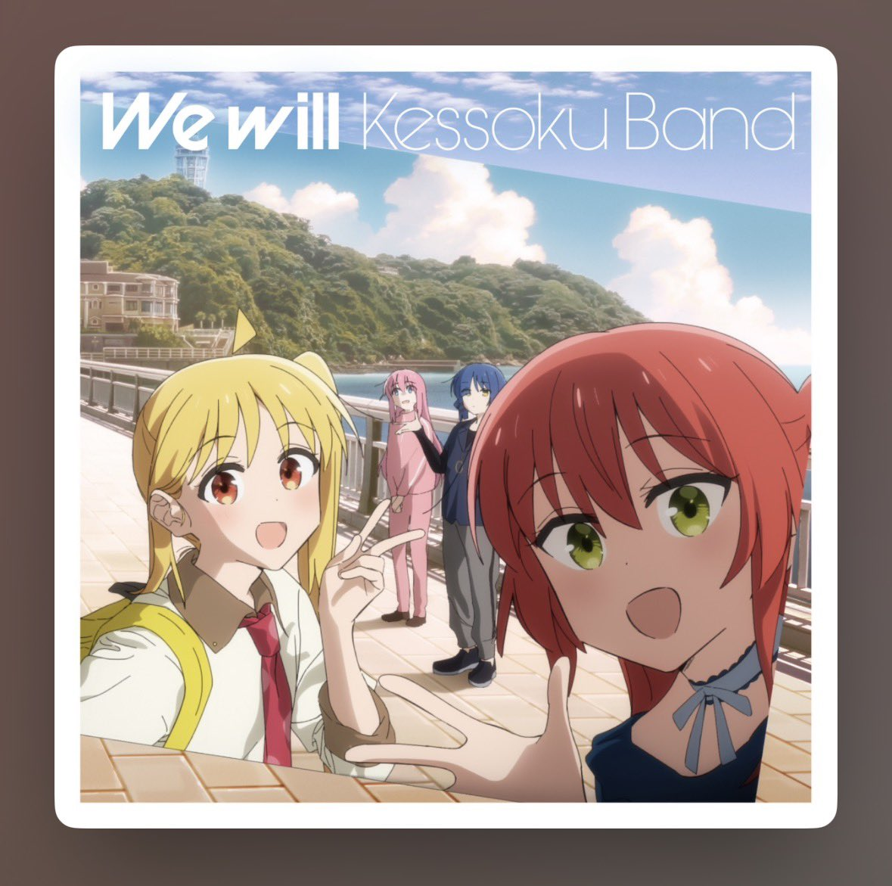

サイバー環状線
@CyberKanjousen
今天光顾着看日本人波奇酱了，没能更新朝鲜人波奇酱，非常抱歉喵！
另外原来「結束バンド」不译作「结束乐队」而译「纽带乐队」吗？環状線听了大半年結束バンド的歌，还感觉这个乐队的名称挺伤感的。
再次为環状線的拖延而道歉！環状線明天一定更！😭

サイバー環状線
@CyberKanjousen
🇰🇵朝鲜人朴波奇因为皱眉，所以失学了。
那一天是「光明星节」，朴波奇的高中组织了一场文艺演出，全体师生必须前来观看。
演出内容很单调，无非就是每班合唱一首「主旋律」歌曲，再过一遍称颂将军的活动。听惯李家里那些动漫歌曲的朴波奇，再听到「主旋律」的时候，只感觉难以入耳。
要是李在身边 https://t.co/FBuJ8PCAKE